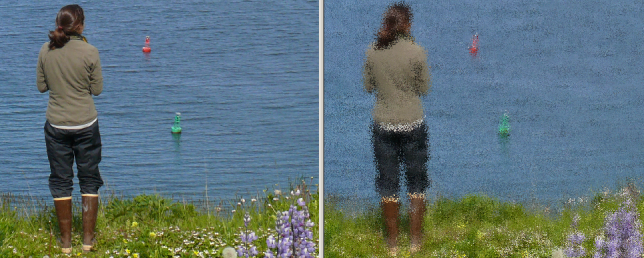

Artistic Effect: Impressionist
Previous
Top
Next
The Impressionist effect changes a photo to make it look like an impressionistic painting. You can specify the horizontal and vertical size of the brush strokes.
